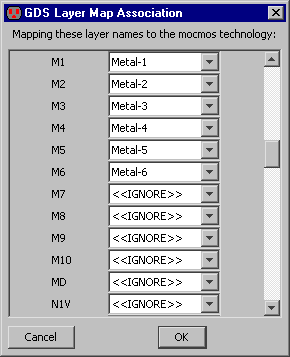
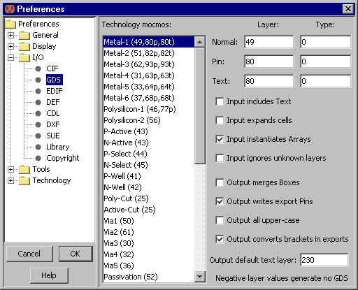

|
GDS II (он же формат "Stream" ) используется в качестве средства обмена между системами проектирования и кремниевыми заводами.
Информация о чтении и записи GDS, содержится в
Разделе 3-9-2 и
разделе 3-9-3.
В GDS файлах, слои не имеют имен, а только пару численных значений (номер слоя и тип).
Важно, что Electric знает, как эти значения соотносятся со слоями, и, таким образом, может правильно читать и записывать GDS файлы.
Можно задать соответствия командой GDS Map File... (в меню File / Import), прочитав GDS map file.
Также можно использовать диалоговое окно "GDS"
(в меню File / Preferences..., раздел "I/O", панель "GDS"), чтобы отредактировать номера GDS и управлять другими аспектами ввода и вывода GDS.
|  |
В диалоговом окне "GDS" список слева показывает все слои Electric в текущей технологии. Если нажать мышкой на имени слоя, численные значения GDS показываются сверху справа и могут быть отредактированы
Помимо уже известных численных значений использующихся для разметки слоев, существуют два других типа численных значений GDS:
pin (для экспорта) и text (для экспортируемых имен).

При чтении GDS применяются следующие элементы диалогового окна:
- "Input includes Text".
Текстовые примечания в GDS файле игнорируются во время ввода, поскольку захламляют экран. Чтобы прочитать и отобразить текстовые примечания, следует выбрать эту опцию.
- "Input expands cells".
Эта опция управляет тем, будут ли ячейки отображены полностью или нет, касается электрических схем Electric.
По умолчанию, ячейки не развернуты и выглядят простыми прямоугольниками.
Если же выбрать эту опцию, то ячейки будут развернуты и их содержимое будет отображаться.
Степень развертывания ячеек также можно изменить с помощью команд Expand Cell Instances
и Unexpand Cell Instances меню Cells.
- "Input instantiates Arrays".
This controls whether or not arrays in the GDS file are instantiated.
By default, arrays are instantiated fully, but this can consume excessive amounts of memory if there are large arrays.
If you uncheck this item, only the upper-left and lower-right instance are actually placed.
- "Input ignores unknown layers".
Эта опция управляет тем, будут ли неизвестные слои GDS файла проигнорированы или же размещены на схеме. По умолчанию, неизвестные слои представляются в виде DRC-Nodes (специальные узлы, показывающие DRC ошибки, выглядят как оранжевые квадраты).
Если выбрать эту опцию, неизвестные слои будут проигнорированы.
Следующие элементы диалогового окна применяются при записи GDS файла:
-
"Output merges Boxes".
Эта опция управляет тем, сливать или нет элементы топологии, находящиеся вплотную. Полезно из-за избыточности, возникающейся при соединении дуг и узлов.
По умолчанию слияния не происходит. Это увеличивает размер фалов, но конструкции при этом проще и файлы генерируются быстрее.
Если же выбрать опцию "Output Merges Boxes", то
можно увидеть, что все соседние области одного и того же слоя сливаются в один сложный многоугольник. Это требует больше вычислений, и на выходе получается файл меньшего размера с более сложными конструкциями.
-
"Output Writes export Pins".
Эта опция управляет тем, всегда ли контакты записываются в GDS файл. Если опция выбрана, то все корректные слои, состоящие только из контактов, будут записаны.
-
"Output all upper case".
Проверка на использование в GDS файле только верхнего разряда. По умолчанию, можно применять символы как верхнего, так и нижнего разряда, но некоторые системы понимают только файлы, гда все символы в верхнем разряде.
-
"Output converts brackets in exports".
Опция управляет тем, следует ли конвертировать квадратные скобки в GDS файлах в другую форму. Полезно тем, что некоторые системы не признают квадратных скобок.
-
"Output default text layer".
Этот параметр представляет собой номер слоя, в который будут записаны текстовые данные. Еслир этот номер установлен, то при записи в GDS файл будет использоваться именно он, а не тот, что устанавливается по умолчанию.